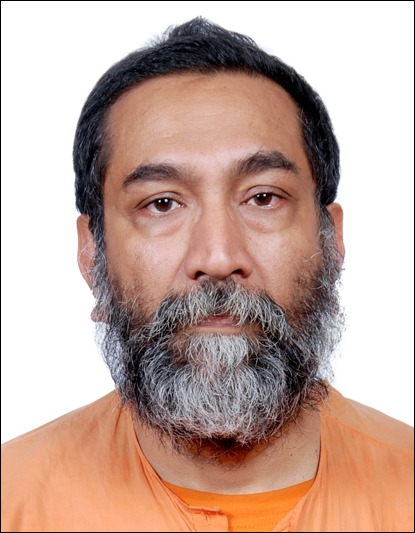

The 2026 KRS Sastry Prize
The inaugural KRS Sastry Prize is awarded to Prof. Mahan Mj for his contributions of fundamental importance to the study of geometry, groups, dynamics, and probability, and of connections between these subjects.

JURY CITATION
The 2026 KRS Sastry Prize is awarded to Mahan Mj for his fundamental research in geometry, groups, dynamics, and probability. By uncovering deep connections between these areas, his works have resolved central questions across these fields. In particular, Mahan's series of papers on Cannon–Thurston maps culminated in a proof of the existence of such maps for all finitely generated Kleinian groups. This settled one of the key open problems in the Thurston programme for studying hyperbolic 3-manifolds.
❧ ❧ ❧ ❧ ❧ ❧ ❧ ❧
ABOUT THE LAUREATE
Mahan Mj was born in 1968 in West Bengal, India. He is currently a Professor at the School of Mathematics at the Tata Institute of Fundamental Research (TIFR) in Mumbai, and is a monk of the Ramakrishna Order. He received his Master's degree from the Indian Institute of Technology Kanpur in 1992 and his PhD from the University of California, Berkeley in 1997. After working briefly at the Institute of Mathematical Sciences in Chennai in 1998, he joined the Ramakrishna Order. Before joining TIFR, he served as a Professor and as the Dean of Research at the Ramakrishna Mission Vivekananda University. Mahan Mj was awarded the Sloan Research Fellowship in 1996 and the Shanti Swarup Bhatnagar Prize in 2011. He was an invited speaker at the 2018 International Congress of Mathematicians in Rio de Janeiro.
JURY
Peter Sarnak (Chair)
Nalini Anantharaman (Member)
Gautam Bharali (Member ex-officio)
Yakov Eliashberg (Member)
François Labourie (Member)
Nikhil Srivastava (Member)
ABOUT THE PRIZE
The KRS Sastry Prize honours an Indian mathematician, working in India, for their long-term contributions of fundamental importance to any branch of mathematics.
Given once every four years, this award has been made possible by the generosity of the Late K.R. Shankaranarayana Sastry, a private individual who had a life-long interest in mathematics and was a keen well-wisher of the Indian Institute of Science (IISc). In accordance with the terms of the bequest, as stated in Sastry's will, the award is instituted and administered by IISc, in consultation with the Department of Mathematics at IISc.
The prize consists of a cash award of 5 lakh rupees and an accompanying citation. Following a nomination process, the recipient is selected by an independent jury of eminent mathematicians of international renown.
RULES OF THE PRIZE
- The KRS Sastry Prize is awarded to an Indian mathematician who is 60 years of age or less for their long-term contributions of fundamental importance to any branch of mathematics.
- Nominees must be no older than 60 years on January 1 of the year of the award.
- A nominee is required to have held regular positions, without a break, at institutions – whether public or private – in India for at least five years at the time of nomination. The nominee must be resident in India and can be a non-citizen.
- A person holding a permanent position at the Indian Institute of Science either at the time of nomination or during the period of consideration for the prize is ineligible for the prize.
- A nomination will be valid for one more cycle provided all the eligibility criteria are met.
- Winners of the KRS Sastry Prize cannot be nominated again.
- Nominations are sought, by invitation, from a diverse body of nominators whose composition will be reviewed by the KRS Sastry Endowment Standing Committee from time to time.
- Self-nominations are not allowed.
- The winner of the prize will be decided by a jury of eminent mathematicians from a broad range of specializations. The decision of this jury will be final.
- In any given year, the jury may decide, in view of the nominations received, not to announce any winner for that year.
THE NOMINATION PROCESS
Names of candidates for the KRS Sastry Prize may be proposed by anyone who has received an invitation to nominate. The KRS Sastry Endowment Standing Committee strives to reach a discerning, yet diverse, body of nominators whose composition will be reviewed by this Committee from time to time.
Only those nominations and supporting materials received from an institutional e-mail address will be accepted. All nominations will be kept strictly confidential.
ELIGIBILITY
- Nominees must be no older than 60 years on January 1 of the year of the award. Therefore, to be considered for the 2026 KRS Sastry Prize, a nominee must be no older than 60 years on January 1, 2026.
- To be eligible, a nominee must have held regular positions, without a break, at institutions — whether public or private — in India for at least five years at the time of nomination. The nominee must be resident in India and can be a non-citizen.
- A nomination will be valid for one more cycle provided all the eligibility criteria are met.
- Past winners of the KRS Sastry Prize and anyone holding a permanent position at the Indian Institute of Science either at the time of nomination or during the period of consideration for the prize cannot be nominated.
DEADLINE
For the 2026 KRS Sastry Prize, a completed nomination form (link provided in the invitation to nominate) and all required supporting material must be received on or before May 25, 2026.